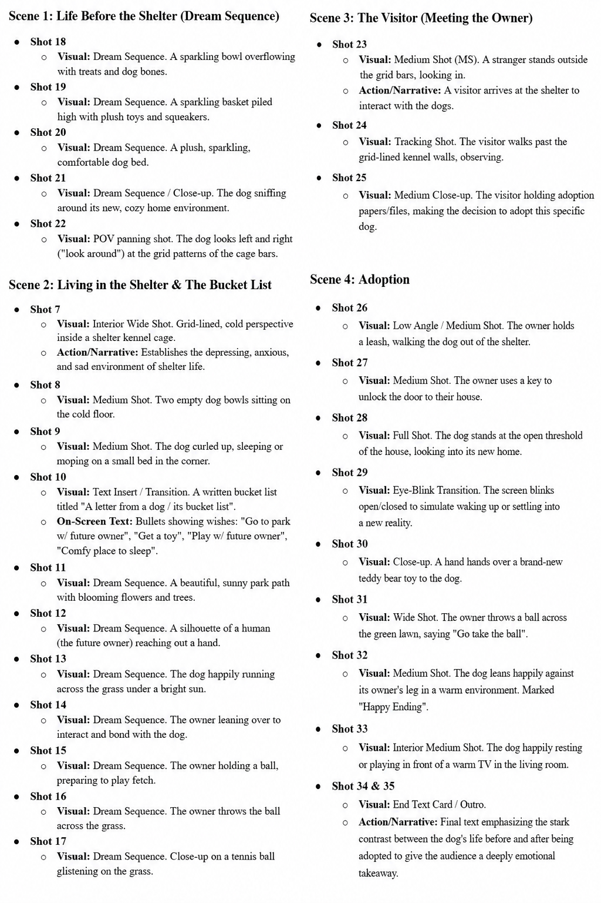

Production journal₊˚‧ ۶ৎ ˚.
During the production process, we wanted to show exactly what dogs see and include some special effects, so we chose to use an Insta360 camera to record most of the shots. However, we faced a challenge when filming a scene that was supposed to look like it was in an animal shelter. We originally planned to use a cage, but the cage I had before had already been given away, so we had to come up with another solution. To solve this problem, we looked for a dark place that could create a sad atmosphere, and we eventually found a gate that perfectly suited what we wanted to show. Therefore, we used the gate instead of a cage for that scene. Overall, I do not think the whole process was very challenging, but it was quite tiring because I had to do many tasks, such as drawing the storyboard, recording, editing, and more. Even so, I think the final video turned out better than I expected. However, I feel that our roles could have been more balanced because I drew all of the storyboard, created all of the slides for one of the presentations, and handled the editing, which put a little pressure on me. Next time, I think we can work together more as a team and share the workload more evenly.
